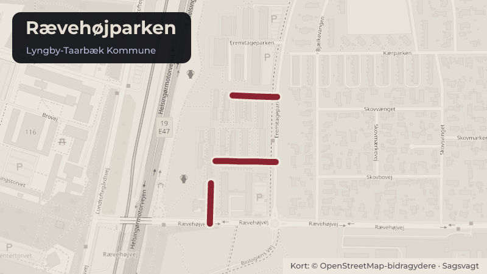

Besluttet 27. august, Økonomiudvalget, Lyngby-Taarbæk
Bofællesskabet Rævehøjparken - reduktion af pladser

Kort fortalt
- Hvem
- Økonomiudvalget, Lyngby-Taarbæk Kommune
- Hvornår
- Torsdag 27. august 2026
- Status
- Besluttet. Anbefalet.
- Næste skridt
- Såfremt udvalget godkender indstillingen, skal Socialtilsynet ansøges om at godkende en såkaldt væsentlig ændring, i form af reduceret antal pladser i Bofællesskabet Rævehøjparken. Der skal for 2027 i så tilfælde beregnes en ny takst for Rævehøjparken.
Er noget forkert her? Skriv til os
Læs hele sagen Kommunens egen tekst
Indstilling
Forvaltningen foreslår, at antal pladser i Bofællesskabet Rævehøjparken reduceres fra ti til fem
pladser pr. 1.december 2026.
Problemstilling
Bofællesskabet Rævehøjparken blev etableret i efteråret 2020. Det er et midlertidigt botilbud i
henhold til Servicelovens § 107 med ti pladser til unge mellem 18 og 29 år, der har en
psykiatrisk diagnose. Tilbuddets målgruppe blev i 2023 godkendt til også at gælde borgere
med opmærksomhedsforstyrrelsen ADHD.
Tilbuddet er normeret til fem fuldtidsansatte medarbejdere og en leder (lederen dækker også to
andre botilbud til unge), hvilket betyder, at der er 13,8 borgerrettede timer pr. plads pr. uge. Der
er ikke tilknyttet nattevagt til tilbuddet.
Der har igennem det seneste års tid løbende været ledige pladser i tilbuddet, og den seneste
visitation til tilbuddet ligger ca. et år tilbage. Forvaltningen vurderer at der ikke længere er unge
i den målgruppe, som tilbuddet er godkendt til at indskrive, der kan visiteres til tilbuddet.
Tilbuddet har på grund af de tomme pladser kørt med reduceret bemanding i en lang periode.
Det er forvaltningens vurdering, at en del af de unge, som tidligere blev visiteret til
Bofællesskabet Rævehøjparken, nu i stedet bliver visiteret til det fælles unge/voksentilbud
"Udvidede Handlemuligheder i Hjemmet (UHH). UHH startede op i 2022 og er et
socialpædagogisk tilbud til borgere, der har væsentlige sociale- og/eller psykiatriske
udfordringer, men som ønsker at bo i egen bolig og modtage støtten dér, fremfor i et botilbud.
UHH har siden opstarten været en succes og har haft svært ved at følge med efterspørgslen.
Der er aktuelt 18 unge mellem 18-29 år, der i princippet er i målgruppen for et midlertidigt
botilbud og herunder et tilbud som Bofællesskabet Rævehøjparken, men som i stedet har sagt
ja til tilbud om støtte fra UHH. Disse borgere bor i egen lejelejlighed i Lyngby-Taarbæk
Kommune.
Andre unge, som målgruppemæssigt hører under socialpsykiatrien, har større støttebehov end
hvad Bofællesskabet Rævehøjparken er godkendt til at kunne indskrive i bofællesskabets
nuværende rammer og disse unge visiteres derfor til dyrere og mere omfattende midlertidige
botilbud udenfor kommunen.
Løsninger
Midlertidige botilbud i henhold til Servicelovens § 107 skal oprettes på Tilbudsportalen og
godkendes af Socialtilsynet. Socialtilsynet tager på baggrund af oplysninger om de fysiske
rammer, de socialfaglige og eventuelt sundhedsfaglige kompetencer og de faglige tilgange og
metodiske afsæt, stilling til om de konkrete målgrupper, som tilbuddet søges godkendt til at
støtte, vurderes at ville kunne profitere af tilbuddet. Det er ikke tilladt at indskrive andre
målgrupper end dem, som Socialtilsynet specifikt har godkendt til indskrivning i tilbuddet.
Forvaltningen har planlagt en målgruppeanalyse til efteråret 2026, hvor det blandt andet skal
belyses, om der er potentiale i at etablere et lokalt tilbud til en anden målgruppe end den, som
Bofællesskabet Rævehøjparken på nuværende tidspunkt er godkendt til at støtte. Der vil i den
forbindelse blive taget stilling til Bofællesskabet Rævehøjparkens fremtid.
Indtil en ny målgruppeanalyse foreligger, ønsker forvaltningen på baggrund af ovenstående, at
reducere pladsantallet på Bofællesskabet Rævehøjparken fra de nuværende ti til fem pladser,
svarende til det antal beboere, der bor der nu. Ændringen ønskes iværksat fra 1. december
2026 af hensyn til opsigelsesvarslet for de fem lejligheder. For at kunne dække beboernes
behov henover ugen, er det ikke muligt at reducere medarbejdernormeringen helt svarende til
det ændrede antal pladser. Det vurderes realistisk, at kunne dække beboernes behov med en
normering svarende til tre fuldtidsansatte medarbejdere og fortsat ledelse, der også dækker to
andre botilbud til unge. Tilsvarende er det ikke muligt, at reducere tilbuddets driftsbudget helt
svarende til det reducerede pladstal, da udgifter til blandt andet kompetenceudvikling, IT og
drift af fælleslejligheden ikke påvirkes væsentligt ved det ændrede antal pladser.
Strategisk ramme
Forslaget er i overensstemmelse med kommunens overordnede strategi, der har fokus på at
sikre relevante tilbud internt i kommunen, der passer til borgernes behov. Det indebærer en
løbende vurdering af behovet for interne kommunale tilbud, herunder omstilling af allerede
etablerede tilbud.
Videre proces
Såfremt udvalget godkender indstillingen, skal Socialtilsynet ansøges om at godkende en
såkaldt væsentlig ændring, i form af reduceret antal pladser i Bofællesskabet Rævehøjparken.
Der skal for 2027 i så tilfælde beregnes en ny takst for Rævehøjparken.
Afhængig af, hvad den kommende målgruppeanalyse viser, vil der blive forelagt en ny sag, der
kan berøre Bofællesskabet Rævehøjparken.
Økonomi
Forslaget indebærer at:
Personalenormeringen reduceres fra fem pædagogiske medarbejdere til tre
Budget til leje af ungdomsboligerne i Rævehøjparken reduceres svarende til fem færre
lejeboliger
Driftsbudgettet reduceres med 35 %
Det reducerede budget tilbageføres til myndighedsbudgettet under Ungeindsats (midlertidigt
botilbud), hvorfra finansieringen af tilbuddet i sin tid er realiseret, og hvor tilbud til målgruppen
finansieres fra.
p/l
Udvalg /
Aktivitetsområde
Social og
Reduktion - beskæftigelsesudvalget
lønninger
/ Ungeindsatsen /
Udfører
Social og
Reduktion - beskæftigelsesudvalget
driftsudgifter / Ungeindsatsen /
Udfører
Social og
Reduktion - beskæftigelsesudvalget
ejendom
/ Ungeindsatsen /
Udfører
Social og
Øgning
beskæftigelsesudvalget
budgetramme / Ungeindsatsen /
Myndighed
I alt
Varig?
ja/nej
ja
ja
ja
ja
Beslutningskompetence
Social- og Beskæftigelsesudvalget anbefaler.
Økonomiudvalget anbefaler.
Kommunalbestyrelsen beslutter.
Beslutningsforløb
Beslutning fra Social- og Beskæftigelsesudvalget 2026-2029, den 20. august 2026, punkt
Anbefalet.
Lasse Lilja Vilhelmsen (C) var fraværende under behandling af punktet.
Beslutning
Anbefalet.
Kilde: Lyngby-Taarbæk Kommune, Økonomiudvalget, referat fra mødet torsdag 27. august 2026, punkt 23. Læs den originale sag hos kommunen.
Steder i sagen: Rævehøjparken